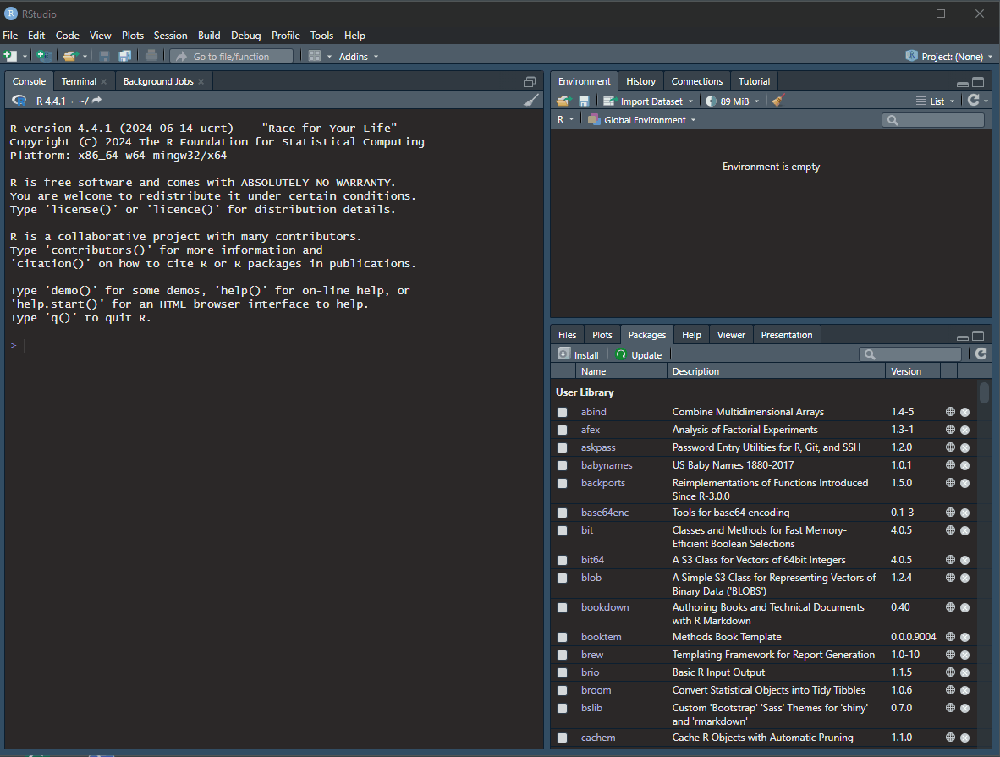

1 Projects, R Markdown, and Data Wrangling
Intended Learning Outcomes
By the end of this chapter you should be able to:
- Re-familiarise yourself with setting up projects
- Re-familiarise yourself with RMarkdown documents
- Recap and apply data wrangling procedures to analyse data
Individual Walkthrough
1.1 R and R Studio
Remember, R is a programming language that you will write code in and RStudio is an Integrated Development Environment (IDE) which makes working with R easier as it’s more user friendly. You need both components for this course.
If this is not ringing any bells yet, have a quick browse through the materials from year 1 to refresh your memory.
1.1.1 R server
R and RStudio are already installed on the R server. We recommend using the server if your computer does not allow installation (e.g., a Chromebook), or if you have problems installing R on your computer. Otherwise, you should consider installing R and RStudio on your own computer.
You will find the link to the server on Moodle.
1.1.2 Installing R and RStudio on your computer
Appendix A has detailed instructions on how to install R and RStudio on your own computer. There are also some links to a series of walkthroughs for installing R on different types of computers/ operating systems.
If you had R and RStudio installed on your own computer last year, we recommend updating to the latest versions. In fact, it might be good to do that at the start of each academic year. Detailed guidance can be found in Appendix B.
Once you have installed/updated R and RStudio, come back to this chapter.
1.1.3 Settings for Reproducibility
By now you should be aware that the Psychology department at the University of Glasgow is pretty big on reproducibility, open science, and raising awareness about questionable research practices (QRPs). Therefore, you should be doing things reproducibly so that others (and your future self) can understand and check your work. That also allows you to reuse your work more easily.
Always start with a clear workspace. Keeping anything in your Global Environment from a previous session means you can never be sure whether your current code is working or if your code is accessing previously created objects.
Hence, there are a few settings you should fix immediately after installing/updating RStudio, in
- uncheck the box that says
Restore .RData into workspace at startup to make sure no data from a previous session is loaded into the environment - set
Save workspace to .RData on exit toNever so that your workspace is not saved when you exit RStudio.
1.1.4 RStudio panes
RStudio has four main panes each in a quadrant of your screen:
- Source pane
- Environment pane
- Console pane
- Output pane
Let’s see what you remember about the RStudio panes from last year. Click on the Test your understanding section below and give it a go.
Test your understanding
What is their purpose?
The Source pane…Where are these panes located by default?
- The Source pane is located?
- The Environment pane is located?
- The Console pane is located?
- The Output pane is located?
If you were not quite sure about one/any of the panes, check out the materials from Level 1. If you want to know more about them, there is the RStudio guide on posit
1.2 Activity 1: Creating a new project
It’s important that we create a new RStudio project every time we start a new project. It makes life easier to work in multiple contexts, for example when analysing different datasets at the same time. Every RStudio project has their folder location, workspace, and working directories, basically keeping all the data and the RMarkdown documents in one location.
Last year, you learnt how to create projects on the server, so you already know the steps. If cannot quite recall how that was done, go back to the Level 1 materials.
On your own computer, open RStudio, and complete the following steps in this order:
- Click on
File > New Project… - Then, click on “New Directory”
- Then, click on “New Project”
- Name the directory something meaningful (e.g., “2A_chapter1”), and save it in a location that makes sense, for example, a dedicated folder you have for your level 2 Psychology labs - you can either select a folder you have already in place, or create a new one (e.g., I named my new folder “Level 2 labs”)
- Click “Create Project”. RStudio will restart itself and open with this new project directory as the working directory. If you accidentally close it, you can open it by double-clicking on the project icon in your folder
- You can also check in your folder structure that everything was created as intended

Why is the Colour scheme in the gif different?
In case anyone is wondering why my colour scheme in the gif above looks different to yours, I’ve set mine to “Pastel On Dark” in
Don’t nest projects
Don’t ever save a new project inside another project directory. This can cause some hard-to-resolve problems.
1.3 Activity 2: Create a new R Markdown file
- Open a new R Markdown document: click
File > New File > R Markdown or click on the little page icon with a green plus sign (top left). - Give it a meaningful
Title(e.g., Level 2 chapter 1) - you can also change the title later. Feel free to add your name or GUID in theAuthorfield author name. Keep theDefault Output Formatas HTML. - Once the Rmd opened, you need to save the file.
- To save it, click
File > Save As… or click on the little disc icon. Name it something meaningful (e.g., “chapter_01.Rmd”, “01_intro.Rmd”). Make sure there are no spaces in the name - R is not very fond of spaces… This file will automatically be saved in your project folder (i.e., your working directory) so you should now see this file appear in your file viewer pane.

Remember, an R Markdown document or Rmd has “white space” (i.e., the markdown for formatted text) and “grey parts” (i.e., code chunks) in the default colour scheme (see Figure 1.1), and is a great way to create dynamic documents. The key advantage of R Markdown is that it allows you to write code into a document, along with regular text, and then knit it using the package knitr() to create your document as either a webpage (HTML), a PDF, or Word document (.docx). We’ll only knit to html documents in this course.

1.3.1 Markdown
The markdown space is for formatted text. You can and should write notes for yourself and others on what your code is doing (earlier on) or what decisions you are making. This can be really useful later on, for example, when making decision about inclusion/exclusion criteria or whatever you conclude from your assumption tests.
There is a variety of heading levels to make use of, using the # symbol. You would incorporate this into your text as:
# Heading level 1
## Heading level 2
### Heading level 3
#### Heading level 4
##### Heading level 5
###### Heading level 6
And it will be displayed in your knitted html file as

You can also include bullet points using either *, - or + and they will turn into:
- bullet point created with
* - bullet point created with
- - bullet point created with
+
or use bullet points of different levels using 2 spaces (for sub-item 1) or 4 spaces for (sub-item 2):
- bullet point item
- sub-item 1
- sub-item 2
- sub-item 1
My bullet points don’t work when knitting
You need an empty row before your bullet points start. If I delete the empty row before the bullet points, they will be displayed in the html as …
Text without the empty row: * bullet point created with * - bullet point created with - + bullet point created with +
Include emphasis to display text in bold or italics etc.
| R markdown syntax | Displayed in the knitted html file |
|---|---|
| **bold text** | bold text |
| *italic text* | italic text |
Other examples can be found in the R Markdown Cheat Sheet
1.3.2 Code chunks
Everything you write into the code chunks will be interpreted as code and computed by R. Code chunks start with ``` followed by an {r} which specifies the coding language, some space for code, and ends with ```. If you accidentally delete one of those backticks, your code won’t run and/or your text parts will be interpreted as part of the code chunks or vice versa. This should be evident from the colour change - more white than expected if it’s one of the starting backticks, and too much grey/not enough white when it’s the backticks at the end. But no need to fret - just add the missing backticks manually.
You can insert a new code chunk either by
- clicking the
Insert a new code chunkbutton in the RStudio Toolbar (green icon at the top right corner of theSource pane) - clicking on the menu
Code > Insert Chunk - using the shortcut
Ctrl + Alt + Ifor Windows andCmd + Option + Ion MacOSX or - typing
```{r}and```manually
Within the curly brackets, you can specify a name for your code chunk (see pink highlighting in Figure 1.1). The chunk name is not necessarily required, however, it is good practice to give each chunk a unique name to support more advanced knitting approaches.
Within the the curly brackets, you can also place rules and arguments (see purple highlighting in Figure 1.1) to give you control over how your code is interpreted and what exactly is shown in your html output. The most common knitr display options are:
| Code | Does code run | Does code show | Do results show |
|---|---|---|---|
| eval=FALSE | NO | YES | NO |
| echo=TRUE (default) | YES | YES | YES |
| echo=FALSE | YES | NO | YES |
| results=“hide” | YES | YES | NO |
| include=FALSE | YES | NO | NO |
There are also the options of manipulating messages and warnings in the knitted document:
-
message=FALSEwill not display any messages generated by the code, and -
warning=FALSEwill not display any warning messages generated by the code
Important
The table above will be incredibly important for the data skills homework II.
- In your newly created Rmd file, delete everything below line 12 (keep the set-up code chunk) and save your Rmd by clicking on the disc symbol.

1.4 Activity 3: The data for this chapter
The data . Download it here: filename. There are 2 csv files contained in a zip-folder. One is the data file we are going to use today hp_data_modified.csv and the other is the questionnaire_codebook for the main 3 questionnaires used in the data.
First step is to unzip that folder so that the files are placed within the same folder as your project.
Include a screenshot here once we have data
The paper was published in 2023, and the original data can be found on OSF (https://osf.io/5qshg/). However, for the purpose of this chapter, we have modified the data slightly (e.g., recoding some variables etc.).
Citation
Pownall, M., Pennington, C. R., Norris, E., Juanchich, M., Smailes, D., Russell, S., Gooch, D., Evans, T. R., Persson, S., Mak, M. H. C., Tzavella, L., Monk, R., Gough, T., Benwell, C. S. Y., Elsherif, M., Farran, E., Gallagher-Mitchell, T., Kendrick, L. T., Bahnmueller, J., . . . Clark, K. (2023). Evaluating the Pedagogical Effectiveness of Study Preregistration in the Undergraduate Dissertation. Advances in Methods and Practices in Psychological Science, 6(4). https://doi.org/10.1177/25152459231202724
Abstract
Research shows that questionable research practices (QRPs) are present in undergraduate final-year dissertation projects. One entry-level Open Science practice proposed to mitigate QRPs is “study preregistration,” through which researchers outline their research questions, design, method, and analysis plans before data collection and/or analysis. In this study, we aimed to empirically test the effectiveness of preregistration as a pedagogic tool in undergraduate dissertations using a quasi-experimental design. A total of 89 UK psychology students were recruited, including students who preregistered their empirical quantitative dissertation (n = 52; experimental group) and students who did not (n = 37; control group). Attitudes toward statistics, acceptance of QRPs, and perceived understanding of Open Science were measured both before and after dissertation completion. Exploratory measures included capability, opportunity, and motivation to engage with preregistration, measured at Time 1 only. This study was conducted as a Registered Report; Stage 1 protocol: https://osf.io/9hjbw (date of in-principle acceptance: September 21, 2021). Study preregistration did not significantly affect attitudes toward statistics or acceptance of QRPs. However, students who preregistered reported greater perceived understanding of Open Science concepts from Time 1 to Time 2 compared with students who did not preregister. Exploratory analyses indicated that students who preregistered reported significantly greater capability, opportunity, and motivation to preregister. Qualitative responses revealed that preregistration was perceived to improve clarity and organization of the dissertation, prevent QRPs, and promote rigor. Disadvantages and barriers included time, perceived rigidity, and need for training. These results contribute to discussions surrounding embedding Open Science principles into research training.
1.5 Activity 4: Loading packages and reading in data
The first step is to load in the packages that we need, and read in the data
── Attaching core tidyverse packages ──────────────────────── tidyverse 2.0.0 ──
✔ dplyr 1.1.4 ✔ readr 2.1.5
✔ forcats 1.0.0 ✔ stringr 1.5.1
✔ ggplot2 3.5.1 ✔ tibble 3.2.1
✔ lubridate 1.9.3 ✔ tidyr 1.3.1
✔ purrr 1.0.2
── Conflicts ────────────────────────────────────────── tidyverse_conflicts() ──
✖ dplyr::filter() masks stats::filter()
✖ dplyr::lag() masks stats::lag()
ℹ Use the conflicted package (<http://conflicted.r-lib.org/>) to force all conflicts to become errorsRows: 214 Columns: 104
── Column specification ────────────────────────────────────────────────────────
Delimiter: ","
chr (15): id, gender, gender_text, ug_degree_subject, pg_degree_subject, phd...
dbl (89): qt_progress, qt_duration_sec, age, degree_ug, degree_pg, degree_ot...
ℹ Use `spec()` to retrieve the full column specification for this data.
ℹ Specify the column types or set `show_col_types = FALSE` to quiet this message.1.6 Activity 5: Familiarise yourself with the data
Step 1: check the codebook (not sure whether to have them look at the variables in the codebook or list some of them here).
Before you dive into wrangling the data, you need to get an understanding of what kind of data you are dealing with and what the format of the dataframe looks like.
As you may have noticed, read_csv() gives you a message what data types appear in your dataset and how many of the columns are in that format. It only lists a few examples of the, so it’s not super useful when you want some specific information. However, it does tell you how many rows and columns your dataframe has.
But there are a few other ways you can get more detailed information about your data. Use whichever method you prefer but do it. Click on the individual tabs to look at the different options:
You can click on the blue arrow icon next to the object name in the Global Environment. This will expand and show information about your columns. The $ indicates a column (from BaseR).
[include a screenshot with a circle around the arrow]
Use glimpse() if you want a more detailed overview you can see on your screen. The output will display rows and column numbers, and some examples of the first couple of observations for each variable.
Rows: 214
Columns: 104
$ qt_progress <dbl> 100, 100, 100, 100, 100, 100, 100, 100, 1…
$ qt_duration_sec <dbl> 434, 580, 1778, 1364, 1110, 2480, 1635, 1…
$ id <chr> "44d95bfc", "b5480e1e", "a6c74319", "25fe…
$ age <dbl> 25, 27, 27, 24, 27, 26, 27, 30, 22, 20, 2…
$ gender <chr> "Female", "Female", "Female", "Female", "…
$ gender_text <chr> NA, NA, NA, NA, NA, NA, NA, NA, NA, NA, N…
$ degree_ug <dbl> 0, 0, 1, 0, 0, 1, 1, 0, 1, 0, 0, 1, 0, 1,…
$ degree_pg <dbl> 1, 1, 1, 1, 1, 1, 1, 0, 0, 1, 1, 1, 1, 1,…
$ degree_other <dbl> 0, 0, 0, 0, 0, 0, 0, 0, 0, 0, 0, 0, 0, 1,…
$ degree_na <dbl> 0, 0, 0, 0, 0, 0, 0, 0, 0, 0, 0, 0, 0, 0,…
$ ug_degree_subject <chr> NA, NA, "Psychology", NA, NA, "Psychology…
$ pg_degree_subject <chr> "Health Psychology", "Cognitive Neuroscie…
$ ug_grad_year <dbl> NA, NA, 2015, NA, NA, 2016, 2015, NA, 201…
$ pg_grad_year <dbl> 2017, 2016, 2019, 2019, 2017, 2018, 2016,…
$ phd_year <chr> "Year 3", "Year 4", "Year 1", "Year 1", "…
$ psych_subfield <chr> "Health", "Cognitive", "Cognitive", "Cogn…
$ qq_spectrum <dbl> 80, 100, 100, 60, 100, 75, 80, 100, 100, …
$ stats_knowledge <dbl> 75, 72, 50, 73, 62, 75, 85, 50, 65, 71, 5…
$ os_knowledge <chr> NA, "I have heard of it and have a good u…
$ os_practice_engage_methods <dbl> 0, 1, 0, 1, 1, 0, 0, 1, 0, 1, 1, 1, 1, 1,…
$ os_practice_engage_data <dbl> 1, 1, 0, 0, 0, 1, 0, 1, 0, 0, 1, 0, 1, 1,…
$ os_practice_engage_analysis <dbl> 0, 0, 0, 0, 1, 0, 0, 1, 0, 1, 0, 0, 0, 1,…
$ os_practice_engage_prereg <dbl> 1, 0, 1, 0, 1, 1, 1, 0, 0, 0, 1, 0, 1, 1,…
$ os_practice_engage_rr <dbl> 0, 0, 0, 0, 0, 0, 0, 0, 0, 1, 0, 0, 0, 1,…
$ os_practice_engage_preprint <dbl> 0, 1, 0, 0, 1, 1, 0, 0, 0, 0, 0, 0, 0, 0,…
$ os_practice_engage_oa <dbl> 1, 1, 0, 1, 0, 1, 0, 1, 0, 0, 1, 0, 0, 1,…
$ os_practice_engage_replicate <dbl> 0, 1, 0, 0, 1, 1, 0, 0, 1, 0, 1, 0, 0, 0,…
$ os_practice_engage_comp <dbl> 0, 0, 0, 0, 0, 0, 0, 0, 0, 1, 0, 0, 0, 0,…
$ stats_practices_used_bayes <dbl> 0, 0, 0, 0, 1, 0, 0, 1, 0, 0, 0, 0, 0, 1,…
$ stats_practices_used_es <dbl> 1, 1, 1, 0, 1, 1, 1, 1, 1, 0, 1, 1, 1, 1,…
$ stats_practices_used_ci <dbl> 1, 1, 1, 1, 1, 1, 1, 0, 0, 1, 1, 1, 1, 0,…
$ stats_practices_used_power <dbl> 1, 1, 1, 0, 1, 0, 1, 0, 1, 1, 1, 1, 1, 1,…
$ stats_practices_used_sample <dbl> 0, 0, 0, 0, 0, 0, 0, 0, 0, 0, 0, 0, 0, 0,…
$ os_first_learn <chr> "Via peers", "Via social media", "Via soc…
$ os_first_learn_text <chr> NA, NA, NA, NA, NA, NA, NA, NA, NA, NA, N…
$ os_learn_sources_course_ug <dbl> 0, 0, 0, 0, 0, 0, 0, 0, 0, 1, 0, 0, 0, 0,…
$ os_learn_sources_course_ms <dbl> 0, 0, 0, 0, 0, 0, 0, 0, 0, 0, 1, 0, 0, 1,…
$ os_learn_sources_course_phd <dbl> 0, 1, 0, 0, 1, 0, 1, 0, 0, 0, 0, 1, 0, 1,…
$ os_learn_sources_sup_ug <dbl> 0, 0, 0, 0, 0, 0, 0, 0, 0, 0, 0, 0, 0, 0,…
$ os_learn_sources_sup_ms <dbl> 0, 0, 1, 0, 0, 0, 0, 0, 0, 0, 0, 0, 0, 1,…
$ os_learn_sources_sup_phd <dbl> 0, 0, 1, 0, 0, 1, 0, 1, 0, 0, 0, 0, 0, 0,…
$ os_learn_sources_external <dbl> 1, 1, 1, 0, 1, 1, 0, 1, 1, 0, 0, 0, 1, 0,…
$ os_learn_sources_soc_media <dbl> 0, 1, 0, 1, 0, 1, 0, 1, 1, 0, 0, 1, 1, 0,…
$ os_learn_sources_peers <dbl> 0, 0, 1, 1, 1, 1, 1, 1, 0, 0, 0, 1, 1, 1,…
$ os_learn_sources_other <dbl> 0, 0, 0, 0, 0, 0, 0, 0, 0, 0, 0, 0, 0, 0,…
$ os_learn_sources_other_text <chr> NA, NA, NA, NA, NA, NA, NA, NA, NA, NA, N…
$ os_interest_learn_more <chr> "Yes, but I'm happy to keep on finding ou…
$ os_attitudes_supervisors <chr> "My supervisor(s) is/are neutral", "My su…
$ os_concepts_confident_01 <dbl> 1, 6, 7, 7, 6, 5, 6, 4, 5, 6, 4, 3, 7, NA…
$ os_concepts_confident_02 <dbl> 2, 5, 7, 6, 6, 4, 6, 5, 4, 6, 5, 4, 5, 6,…
$ os_concepts_confident_03 <dbl> 1, 6, 5, 7, 6, 5, 6, 5, 5, 5, 4, 5, 7, 2,…
$ os_concepts_confident_04 <dbl> 3, 6, 6, 6, 6, 4, 5, 5, 6, 5, 3, 5, 7, 2,…
$ os_concepts_confident_05 <dbl> 1, 6, 4, 7, 5, 4, 6, 1, 5, 5, 3, 6, 6, 3,…
$ os_concepts_confident_06 <dbl> 2, 6, 5, 6, 4, 3, 6, 1, 5, 6, 5, 6, 4, 4,…
$ os_concepts_confident_07 <dbl> 1, 6, 6, 7, 6, 1, 6, 5, 2, 6, 2, 3, 7, 4,…
$ os_concepts_confident_08 <dbl> 4, 5, 5, 5, 4, 4, 6, 5, 6, 6, 6, 5, 4, 4,…
$ os_concepts_confident_09 <dbl> 4, 6, 7, 7, 6, 5, 6, 5, 6, 5, 6, 7, 7, 4,…
$ os_concepts_confident_10 <dbl> 3, 6, 7, 7, 6, 5, 6, 6, 5, 6, 6, 5, 7, 5,…
$ os_concepts_confident_11 <dbl> 3, 5, 7, 6, 7, 5, 6, 5, 4, 6, 6, 4, 7, 6,…
$ os_concepts_confident_12 <dbl> 1, 5, 4, 6, 6, 5, 6, 4, 4, 7, 6, 4, 6, 5,…
$ os_statements_agree_01 <dbl> 1, 1, 1, 1, 2, 1, 1, 2, 1, 5, 3, 2, 1, 4,…
$ os_statements_agree_02 <dbl> 1, 1, 1, 1, 1, 2, 1, 1, 1, 4, 1, 2, 1, 2,…
$ os_statements_agree_03 <dbl> 1, 1, 1, 1, 1, 2, 1, 1, 1, 4, 1, 2, 1, 2,…
$ os_statements_agree_04 <dbl> 1, 5, 4, 3, 4, 3, 1, 1, 1, 4, 1, 4, 2, 4,…
$ os_statements_agree_05 <dbl> 1, 5, 3, 2, 2, 4, 1, 1, 1, 4, 1, 2, 4, 3,…
$ os_statements_agree_06 <dbl> 1, 5, 3, 1, 4, 2, 2, 1, 2, 3, 1, 2, 5, 3,…
$ os_perceive_actions_01 <dbl> 3, 3, 5, 5, 3, 5, 4, 4, 3, 4, 5, 3, 5, 2,…
$ os_perceive_actions_02 <dbl> 5, 5, 5, 5, 4, 5, 5, 4, 3, 5, 5, 5, 5, 4,…
$ os_perceive_actions_03 <dbl> 4, 4, 5, 5, 5, 5, 5, 5, 5, 4, 2, 3, 3, 4,…
$ os_perceive_actions_04 <dbl> 4, 4, 5, 5, 5, 4, 5, 5, 5, 4, 4, 4, 4, 4,…
$ os_perceive_actions_05 <dbl> 3, 3, 4, 5, 5, 3, 5, 3, 3, 5, 3, 4, 2, 2,…
$ os_perceive_actions_06 <dbl> 3, 5, 4, 5, 4, 3, 5, 5, 4, 5, 4, 3, 3, 3,…
$ os_perceive_actions_07 <dbl> 4, 3, 5, 2, 4, 4, 5, 3, 5, 5, 5, 4, 5, 3,…
$ os_perceive_actions_08 <dbl> 3, 4, 4, 5, 3, 4, 5, 4, 3, 5, 1, 4, 5, 3,…
$ os_perceive_actions_09 <dbl> 4, 5, 5, 5, 3, 4, 5, 5, 4, 5, 4, 3, 4, 4,…
$ os_perceive_actions_10 <dbl> 3, 5, 5, 5, 5, 5, 5, 5, 5, 4, 5, 5, 5, 5,…
$ os_perceive_actions_11 <dbl> 4, 3, 4, 4, 3, 5, 5, 4, 3, 5, 4, 4, 4, 4,…
$ os_perceive_actions_12 <dbl> 1, 1, 2, NA, NA, 2, 1, 1, 1, 4, 1, NA, NA…
$ os_perceive_actions_13 <dbl> 1, NA, NA, NA, 2, 1, 1, 1, 1, 4, 1, NA, N…
$ os_perceive_actions_14 <dbl> 3, NA, NA, 2, 3, 2, 1, 1, 1, 3, 1, 2, 1, …
$ os_perceive_actions_15 <dbl> 1, NA, NA, 2, 2, 2, 1, NA, 1, 3, 2, 3, NA…
$ confidence_explaining <dbl> 2.166667, 5.666667, 5.833333, 6.416667, 5…
$ null_beliefs <dbl> 1.000000, 3.000000, 2.166667, 1.500000, 2…
$ qrp_overall <dbl> 3.066667, 3.750000, 4.416667, 4.230769, 3…
$ qrp_data_collection <dbl> 4.0, 4.0, 5.0, 5.0, 3.5, 5.0, 4.5, 4.0, 3…
$ qrp_reporting <dbl> 3.555556, 4.000000, 4.555556, 4.555556, 4…
$ qrp_new_stats <dbl> 1.500000, 1.000000, 2.000000, 2.000000, 2…
$ qq_spectrum_cat <chr> "quant", "quant", "quant", "quant", "quan…
$ stats_knowledge_cat <chr> "high", "high", "low", "high", "high", "h…
$ os_perceive_actions_01_prob <dbl> 3, 3, 5, 5, 3, 5, 4, 4, 3, 4, 5, 3, 5, 2,…
$ os_perceive_actions_02_prob <dbl> 5, 5, 5, 5, 4, 5, 5, 4, 3, 5, 5, 5, 5, 4,…
$ os_perceive_actions_03_prob <dbl> 4, 4, 5, 5, 5, 5, 5, 5, 5, 4, 2, 3, 3, 4,…
$ os_perceive_actions_04_prob <dbl> 4, 4, 5, 5, 5, 4, 5, 5, 5, 4, 4, 4, 4, 4,…
$ os_perceive_actions_05_prob <dbl> 3, 3, 4, 5, 5, 3, 5, 3, 3, 5, 3, 4, 2, 2,…
$ os_perceive_actions_06_prob <dbl> 3, 5, 4, 5, 4, 3, 5, 5, 4, 5, 4, 3, 3, 3,…
$ os_perceive_actions_07_prob <dbl> 4, 3, 5, 2, 4, 4, 5, 3, 5, 5, 5, 4, 5, 3,…
$ os_perceive_actions_08_prob <dbl> 3, 4, 4, 5, 3, 4, 5, 4, 3, 5, 1, 4, 5, 3,…
$ os_perceive_actions_09_prob <dbl> 4, 5, 5, 5, 3, 4, 5, 5, 4, 5, 4, 3, 4, 4,…
$ os_perceive_actions_10_prob <dbl> 3, 5, 5, 5, 5, 5, 5, 5, 5, 4, 5, 5, 5, 5,…
$ os_perceive_actions_11_prob <dbl> 4, 3, 4, 4, 3, 5, 5, 4, 3, 5, 4, 4, 4, 4,…
$ os_perceive_actions_12_prob <dbl> 1, 1, 2, NA, NA, 2, 1, 1, 1, 4, 1, NA, NA…
$ os_perceive_actions_13_prob <dbl> 1, NA, NA, NA, 2, 1, 1, 1, 1, 4, 1, NA, N…
$ os_perceive_actions_14_prob <dbl> 3, NA, NA, 2, 3, 2, 1, 1, 1, 3, 1, 2, 1, …
$ os_perceive_actions_15_prob <dbl> 1, NA, NA, 2, 2, 2, 1, NA, 1, 3, 2, 3, NA…you can also use spec() as suggested in the message above and then it shows you a list of the data type in every single column. But it doesn’t show you the number of rows and columns.
cols(
qt_progress = col_double(),
qt_duration_sec = col_double(),
id = col_character(),
age = col_double(),
gender = col_character(),
gender_text = col_character(),
degree_ug = col_double(),
degree_pg = col_double(),
degree_other = col_double(),
degree_na = col_double(),
ug_degree_subject = col_character(),
pg_degree_subject = col_character(),
ug_grad_year = col_double(),
pg_grad_year = col_double(),
phd_year = col_character(),
psych_subfield = col_character(),
qq_spectrum = col_double(),
stats_knowledge = col_double(),
os_knowledge = col_character(),
os_practice_engage_methods = col_double(),
os_practice_engage_data = col_double(),
os_practice_engage_analysis = col_double(),
os_practice_engage_prereg = col_double(),
os_practice_engage_rr = col_double(),
os_practice_engage_preprint = col_double(),
os_practice_engage_oa = col_double(),
os_practice_engage_replicate = col_double(),
os_practice_engage_comp = col_double(),
stats_practices_used_bayes = col_double(),
stats_practices_used_es = col_double(),
stats_practices_used_ci = col_double(),
stats_practices_used_power = col_double(),
stats_practices_used_sample = col_double(),
os_first_learn = col_character(),
os_first_learn_text = col_character(),
os_learn_sources_course_ug = col_double(),
os_learn_sources_course_ms = col_double(),
os_learn_sources_course_phd = col_double(),
os_learn_sources_sup_ug = col_double(),
os_learn_sources_sup_ms = col_double(),
os_learn_sources_sup_phd = col_double(),
os_learn_sources_external = col_double(),
os_learn_sources_soc_media = col_double(),
os_learn_sources_peers = col_double(),
os_learn_sources_other = col_double(),
os_learn_sources_other_text = col_character(),
os_interest_learn_more = col_character(),
os_attitudes_supervisors = col_character(),
os_concepts_confident_01 = col_double(),
os_concepts_confident_02 = col_double(),
os_concepts_confident_03 = col_double(),
os_concepts_confident_04 = col_double(),
os_concepts_confident_05 = col_double(),
os_concepts_confident_06 = col_double(),
os_concepts_confident_07 = col_double(),
os_concepts_confident_08 = col_double(),
os_concepts_confident_09 = col_double(),
os_concepts_confident_10 = col_double(),
os_concepts_confident_11 = col_double(),
os_concepts_confident_12 = col_double(),
os_statements_agree_01 = col_double(),
os_statements_agree_02 = col_double(),
os_statements_agree_03 = col_double(),
os_statements_agree_04 = col_double(),
os_statements_agree_05 = col_double(),
os_statements_agree_06 = col_double(),
os_perceive_actions_01 = col_double(),
os_perceive_actions_02 = col_double(),
os_perceive_actions_03 = col_double(),
os_perceive_actions_04 = col_double(),
os_perceive_actions_05 = col_double(),
os_perceive_actions_06 = col_double(),
os_perceive_actions_07 = col_double(),
os_perceive_actions_08 = col_double(),
os_perceive_actions_09 = col_double(),
os_perceive_actions_10 = col_double(),
os_perceive_actions_11 = col_double(),
os_perceive_actions_12 = col_double(),
os_perceive_actions_13 = col_double(),
os_perceive_actions_14 = col_double(),
os_perceive_actions_15 = col_double(),
confidence_explaining = col_double(),
null_beliefs = col_double(),
qrp_overall = col_double(),
qrp_data_collection = col_double(),
qrp_reporting = col_double(),
qrp_new_stats = col_double(),
qq_spectrum_cat = col_character(),
stats_knowledge_cat = col_character(),
os_perceive_actions_01_prob = col_double(),
os_perceive_actions_02_prob = col_double(),
os_perceive_actions_03_prob = col_double(),
os_perceive_actions_04_prob = col_double(),
os_perceive_actions_05_prob = col_double(),
os_perceive_actions_06_prob = col_double(),
os_perceive_actions_07_prob = col_double(),
os_perceive_actions_08_prob = col_double(),
os_perceive_actions_09_prob = col_double(),
os_perceive_actions_10_prob = col_double(),
os_perceive_actions_11_prob = col_double(),
os_perceive_actions_12_prob = col_double(),
os_perceive_actions_13_prob = col_double(),
os_perceive_actions_14_prob = col_double(),
os_perceive_actions_15_prob = col_double()
)1.6.1 Data types
Each variable has a data type, such as numeric (numbers), character (text), and logical (TRUE/FALSE values), or a special class of factor.
Numeric data can be double (dbl) or integer (int). Doubles can have decimal places (e.g., 1.1). Integers are the whole numbers (e.g., 1, 2, -1) and are displayed with the suffix L (e.g., 1L). This is not overly important but might leave you less puzzled the next time you see an L after a number.
Characters (also called “strings”) is anything written between quotation marks. This is usually text, but in special circumstances, a number can be a character if it placed within quotation marks. This can happen when you are recoding variables. It might not be too obvious at the time, but you won’t be able to calculate anything if the number is a character
When the data type is incorrect, you won’t be able to compute anything, despite your numbers being shown as numeric values in the dataframe. The error message tells you exactly what’s wrong with it, i.e., that you have non-numeric arguments.
Logical data (also sometimes called “Boolean” values) are one of two values: TRUE or FALSE (written in uppercase). They become really important when we use filter() (see ?sec-filter) or mutate() with conditional statements such as case_when() (see ?sec-conditional).
Some commonly used logical operators:
| operator | description |
|---|---|
| > | greater than |
| >= | greater than or equal to |
| < | less than |
| <= | less than or equal to |
| == | equal to |
| != | not equal to |
| %in% | TRUE if any element is in the following vector |
A factor is a specific type of integer or character that lets you assign the order of the categories. This becomes useful when you want to display certain categories in “the correct order” either in a dataframe (see arrange) or when plotting (see Chapter 3).
1.6.2 Variable types
You’ve already encountered them in Level 1. Variables can be classified as continuous (numbers) or categorical (labels). It’s good to know the distinctions as it will help to decide the appropriate plot for your data (see Section 3.6).
Categorical variables are properties you can count. They can be nominal, where the categories don’t have an order (e.g., gender) or ordinal (e.g., Likert scales either with numeric values 1-7 or with character labels such as “agree”, “neither agree nor disagree”, “disagree”). Categorical data may also be factors rather than characters.
Continuous variables are properties you can measure and calculate sums/ means/ etc. They may be rounded to the nearest whole number, but it should make sense to have a value between them. Continuous variables always have a numeric data type (i.e. integer or double).
Test your understanding
Let’s have a closer look at our data data_os. For this quiz, I’ve selected a few columns, renamed some of them, and modified some of the data types. This is the first few rows of the new object data_quiz.
| id | age | gender | phd_year | qq_01 | qq_02 | qrp_01 | qrp_02 | qrp_average | qrp_01 == qrp_02 |
|---|---|---|---|---|---|---|---|---|---|
| 44d95bfc | 25 | 1 | Year 3 | 80 | quant | 3 | 5 | 4.0 | FALSE |
| b5480e1e | 27 | 1 | Year 4 | 100 | quant | 3 | 5 | 4.0 | FALSE |
| a6c74319 | 27 | 1 | Year 1 | 100 | quant | 5 | 5 | 5.0 | TRUE |
| 25fef7ed | 24 | 1 | Year 1 | 60 | quant | 5 | 5 | 5.0 | TRUE |
| 7620c405 | 27 | 2 | Year 3 | 100 | quant | 3 | 4 | 3.5 | FALSE |
Rows: 214
Columns: 10
$ id <chr> "44d95bfc", "b5480e1e", "a6c74319", "25fef7ed", "76…
$ age <dbl> 25, 27, 27, 24, 27, 26, 27, 30, 22, 20, 25, 26, 31,…
$ gender <fct> 1, 1, 1, 1, 2, 1, 1, 1, 1, 2, 1, 2, 1, 1, 1, 1, 2, …
$ phd_year <fct> Year 3, Year 4, Year 1, Year 1, Year 3, Year 2, Yea…
$ qq_01 <dbl> 80, 100, 100, 60, 100, 75, 80, 100, 100, 76, 65, 90…
$ qq_02 <chr> "quant", "quant", "quant", "quant", "quant", "quant…
$ qrp_01 <dbl> 3, 3, 5, 5, 3, 5, 4, 4, 3, 4, 5, 3, 5, 2, 5, 4, 2, …
$ qrp_02 <dbl> 5, 5, 5, 5, 4, 5, 5, 4, 3, 5, 5, 5, 5, 4, 5, 5, 4, …
$ qrp_average <dbl> 4.0, 4.0, 5.0, 5.0, 3.5, 5.0, 4.5, 4.0, 3.0, 4.5, 5…
$ `qrp_01 == qrp_02` <lgl> FALSE, FALSE, TRUE, TRUE, FALSE, TRUE, FALSE, TRUE,…Select from the dropdown menu the variable type and their data types for each of the columns.
| Column | Variable type | Data type |
|---|---|---|
age |
||
gender |
||
phd_year |
||
qq_01 |
||
qq_02 |
||
qrp_01 and qrp_02
|
||
qrp_average |
||
qrp_01 == qrp_02 |
1.6.3 Why is this important you may ask
Data is messy, especially in a raw format (i.e., when you download it straight from your testing software). R prefers the data to be tidy, which means each row is an observation, each column is a variable, and the information in each cell is a single value.
I’ve modified the data for today slightly, to build in some challenges that you would experience when dealing with raw data, but tbh, the data we are looking at today is pretty tidy.
Getting an understanding of what your data currently looks like and being aware of what your data structure needs to be (e.g., for calculating descriptives, running inferential stats or plotting) is the first step of thinking about the processing steps of how to get your data from A to B.
1.7 Data Wrangling
The basic ones are the Wickham 6 that you’ve encountered already last year
table of the Wickham 6 refer them back to the different chapters where they encountered it in level 1
| Function | Description | First introduced in Level 1 Chapter |
|---|---|---|
| select() | Include or exclude certain variables (columns) | Chapter 6.5 |
| filter() | Include or exclude certain observations/data (rows) | Chapter 6.6 |
| mutate() | Creates new variables (columns) | Chapter 8.8 |
| arrange() | Changes the order of observations (rows) | not yet introduced |
| group_by() | Organises the observations (rows) into groups | Chapter 3.5.3 |
| summarise() | Create summary variables for groups of observations (rows) | Chapter 3.5.2 |
1.7.1 Brief recap of the Wickham 6
1.7.1.1 select
Massive dataframes use a lot of computing power - to reduce that, it would be worth focussing on the columns you need
selecting variables - you can rename them too if you don’t like the column name as is
if you wanna rename something at a later stage, use rename. Works in the same manner as select as in new name = old name. –> This could be in an information box
deselecting deselecting multiple variables
1.7.1.2 filter
text - one condition vs more than one condition numbers - smaller/ larger
1.7.1.3 arrange
ascending, descending - NAs will always listed at the end regardless
factors - sorting data in a preferred way
1.7.1.4 mutate
Allison’s drawing
1.7.1.5 group_by & summarise
1.8 Tidy data
copied from Lisa
1.9 Data types and what are observations/ variables
Do not factor numbers
If you factor numeric data, it gets converted to the integers 1 to the number of unique values, no matter what the values are. Additionally, you can no longer use the values as numbers, such as calculating the mean.
Example
[1] FALSE FALSE FALSESometimes people represent categorical variables with numbers that correspond to names, like 0 = “no” and 1 = “yes”, but values in between don’t have a clear interpretation. If you have control over how the data are recorded, it’s better to use the character names for clarity. You’ll learn how to recode columns in ?sec-wrangle.
1.9.1 Knitting
as a means to check if the file as a whole is running
Pair-coding in the lab
Test your knowledge and challenge yourself
mCQ questions about the different data types